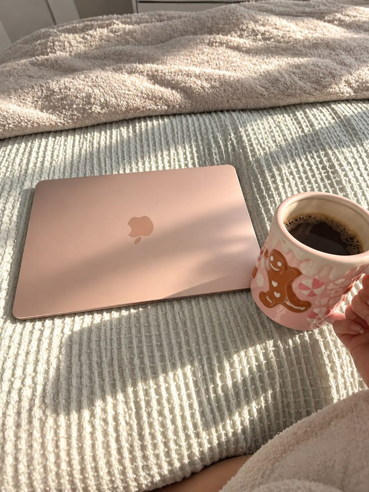
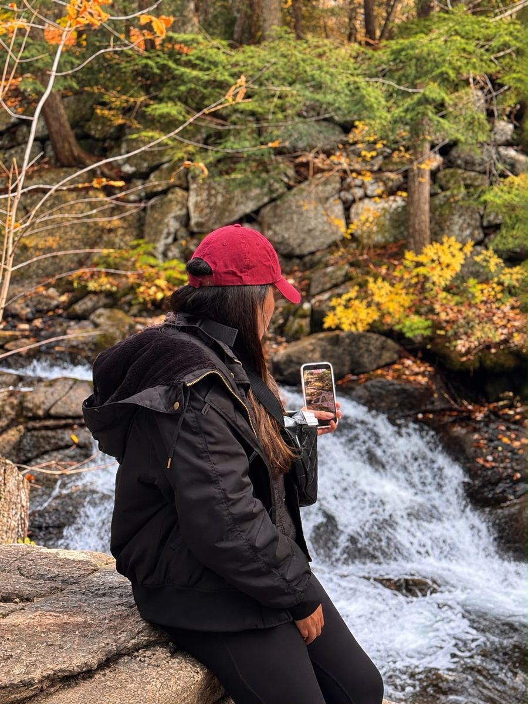
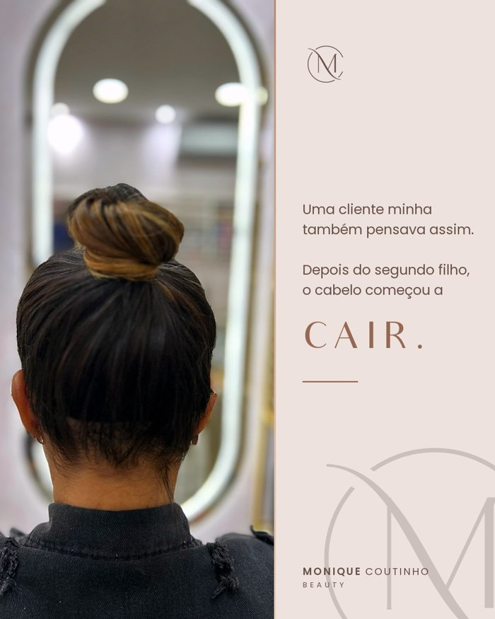
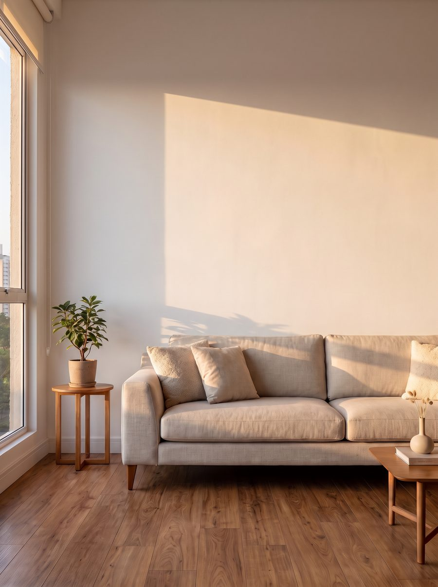
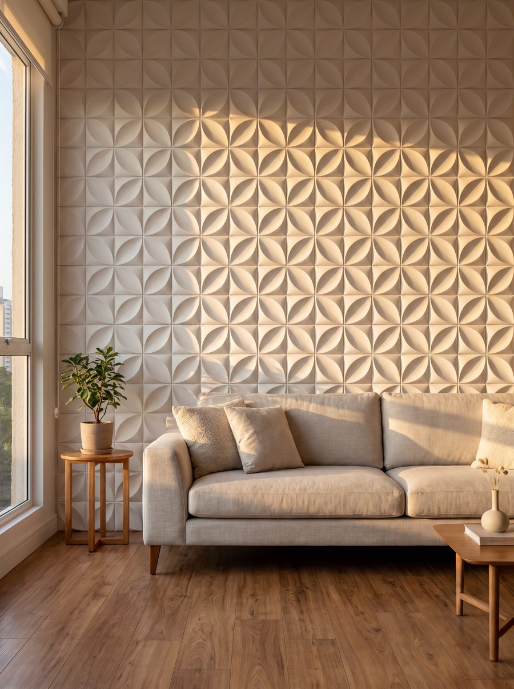
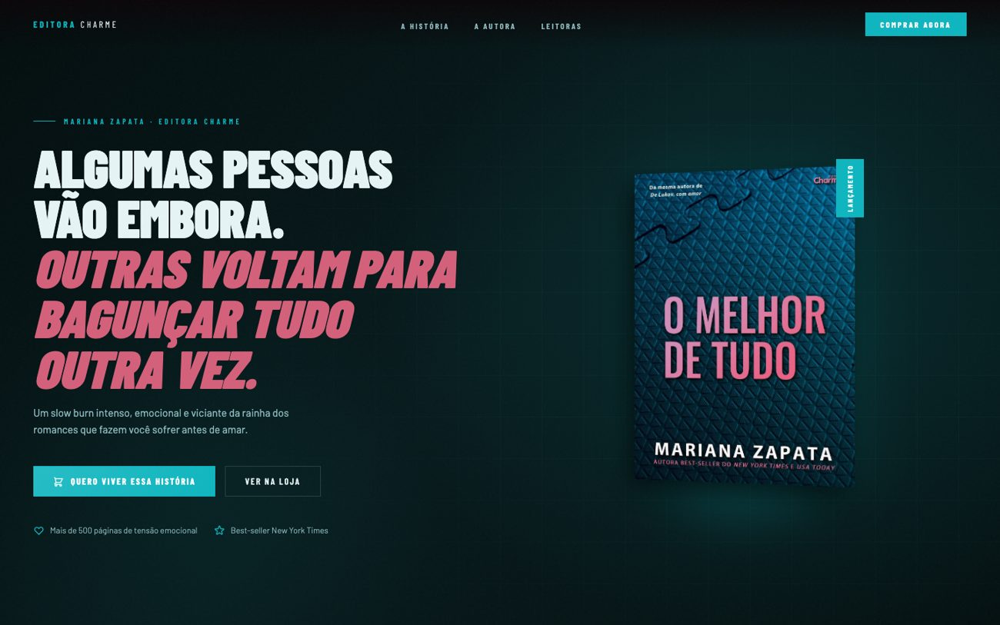
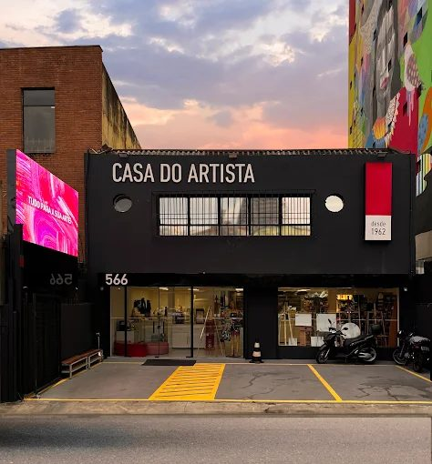

Livros & Citações
Notícias do mundo dos livros: adaptações, elenco e lançamentos, num formato fixo que a seguidora reconhece no feed.
Feed, Reels e site, sem ela sair do atendimento.
Antes & depoisCada matéria é de um cliente real, de um segmento diferente: beleza, imóveis, construção, moda, livros, eventos. Uma delas vai parecer a sua história.


Se você já pensou isso, esta revista é pra você. Eu escuto essa frase quase toda semana: de quem tem salão, imobiliária, loja, construtora, editora ou perfil de entretenimento. Gente que faz um trabalho ótimo e tem um perfil que não mostra nada disso.
O problema quase nunca é o seu trabalho. É que não sobra tempo pra mostrar ele direito. Os vídeos ficam parados no celular, o feed fica semanas sem post e a cliente nova entra no perfil, não entende o que você faz e vai embora sem chamar.
Eu sou a Danielle, trabalho com marketing há mais de 10 anos e assumo exatamente essa parte: planejo, escrevo, edito os seus vídeos, cuido do feed e crio o seu site. Você continua cuidando do seu negócio.
Nas próximas páginas estão clientes reais. Qual delas parece mais com o seu negócio hoje?
A Monique ouvia isso o tempo todo. Mas quem atende o dia inteiro não tem tempo de gravar, editar, escrever e postar. O resultado era um perfil que não mostrava o salão que ela tem.

No feed: o carrossel “Mega hair é coisa de mulher rica?” responde a dúvida que a cliente tem e não pergunta.
“As postagens ficaram mais profissionais, mais alinhadas e com mais personalidade.”Monique Coutinho, dona do salão
A Monique é especialista em mega hair na Tijuca e já sabia como queria ser vista: tons de marrom e bege, elegância, atendimento de perto. Só que o Instagram mostrava outra coisa: o que dava pra postar entre uma cliente e outra.
Primeiro, organizamos. O feed passou a falar do serviço que ela mais quer vender, o mega hair. Os stories ficaram com o dia a dia do salão. E cada carrossel responde uma objeção real da cliente, como “mega hair não é pra mim” e “mega hair é coisa de mulher rica”.
Ela grava no celular, do jeito que dá. Eu escolho as melhores cenas, acerto a cor, monto no ritmo e escrevo o texto. O vídeo que ia ficar esquecido no celular vira Reels.
Faltava um lugar pra quem gostou do perfil marcar horário sem esperar resposta no direct. O site resolveu: serviços, equipe e agendamento online.
Se você tem salão: quantos vídeos bons estão parados no seu celular agora?
O site: “Transformamos beleza em autoestima”, com agendamento online integrado.
É o que o cliente pensa quando vê uma peça de concreto solta num fundo branco. Ninguém compra a peça. Compram a parede pronta.


AntesDepoisArraste: a mesma sala, antes e depois do revestimento 3D Floral. Ambiente ilustrativo.
A Alfa fabrica revestimentos 3D, cobogós, mesas e bancos de concreto. Peças bonitas, mostradas como catálogo: foto da peça, nome e medida. Difícil imaginar aquilo dentro de casa.
Nos posts, a peça foi pra parede: a mesma sala antes e depois, a luz batendo no relevo e uma pergunta no fim, “qual desenho você colocaria na sua casa?”, que leva a conversa pro WhatsApp.
O site foi refeito com a mesma ideia: os 69 produtos organizados em cinco linhas e o botão de orçamento sempre à mão.
Se você vende produto: o seu cliente consegue imaginar ele na vida dele?
alfaconcreto.com.br · redesign de 2026
Antes de ligar pra um corretor, o cliente pesquisa: Instagram, Google, site. Em poucos segundos ele decide se você parece pronto pra atender ou se vai procurar outro.
O site: imóveis com foto, preço e filtro, formulário pra captar cliente, simulação de financiamento e WhatsApp a um clique.
Quem procura imóvel com o Wendy encontra o que encontraria numa imobiliária grande. E os vídeos que ele grava nas visitas viram tours com ritmo, que mostram a casa como ela merece ser vista.
Corretor: quando o cliente pesquisa o seu nome, o que ele encontra?
“Dani já é de tempos… veio por indicação, e indicação muito boa. Ótima profissional. Eu garanto!”Wendy Marcel, corretor de imóveis · comentário no Instagram
A Lírios vende pela Shopee, Mercado Livre, TikTok Shop e WhatsApp. A cliente se perdia entre tantos lugares. Agora existe um link só pra mandar, com as coleções, as medidas e todos os canais.
A loja: coleções, página de medidas e os canais de venda reunidos num endereço só.
Notícias do mundo dos livros: adaptações, elenco e lançamentos, num formato fixo que a seguidora reconhece no feed.

Lançamento de “O melhor de tudo”, de Mariana Zapata: uma página com a cara do romance, pra leitora sentir a história antes de comprar.
Da divulgação ao dia do evento: caligrafia, exposições, música ao vivo e sessões de fotos.

Marketing e logística do site: campanhas pros produtos e cursos do ateliê.
Responda pensando no seu perfil de hoje, não no que você gostaria que ele fosse. Ninguém está vendo. No final, você recebe o diagnóstico e o primeiro passo.
Você atende. Eu cuido do resto. Escolha por onde começar.
Alguém pra cuidar do seu Instagram enquanto você atende: planejamento, posts, stories e o relatório do que funcionou no mês.
Quero este →Textos e carrosséis que respondem as dúvidas da sua cliente e terminam numa pergunta que faz ela chamar no direct.
Quero este →Aquele vídeo parado no celular: você grava do jeito que dá, eu edito com cor, ritmo e texto na tela.
Quero este →Seus serviços, produtos ou imóveis num endereço seu, com agendamento, loja ou WhatsApp a um clique.
Quero este →Inauguração, lançamento ou evento no seu espaço: a comunicação do convite ao dia.
Quero este →Um plano que liga o que você posta ao que você quer vender, com o que publicar em cada dia.
Quero este →Dani, gosto muito do seu trabalho e da forma que você cuida do Instagram do salão. A imagem da Monique Coutinho Beauty mudou muito depois que começamos a trabalhar juntas, e acho que você conseguiu entender bem a identidade que eu queria passar.
Trabalhar com a Dani é surpreendente. A empresa não tinha uma constância, e a Dani veio para agregar e somar com o seu trabalho, sempre excelente, com uma escuta muito ativa e atenta às atualizações das plataformas.
Dani já é de tempos… veio por indicação, e indicação muito boa. Ótima profissional. Eu garanto!
Me conta: o que o seu Instagram ainda não mostra do seu trabalho? A primeira conversa é sem compromisso.